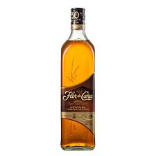
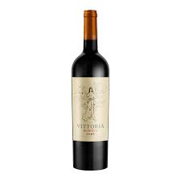
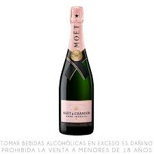
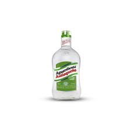
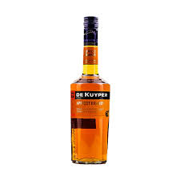
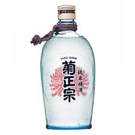

Nuestros Licores

Whisky
Whisky
Nacido en Escocia e Irlanda hace siglos, el whisky era considerado el “agua de la vida”.

Vodka
Vodka
Originario de Europa del Este, el vodka fue usado inicialmente con fines medicinales.

Ron
Ron
Surgió en el Caribe en el siglo XVII, ligado a la producción de azúcar y la vida naval.

Tequila
Tequila
Originario de México, se elabora desde tiempos prehispánicos con el agave azul.

Pisco
Pisco
Nació en Perú en la época colonial como un destilado de uva reconocido mundialmente.

Gin
Gin
Creado en Holanda como medicina, luego se popularizó en Inglaterra en el siglo XVII.

Vino
Vino
Una de las bebidas más antiguas del mundo, con más de 8000 años de historia.

Champagne
Champagne
Originario de Francia, se convirtió en símbolo de lujo y celebración desde la realeza.

Aguardiente
Aguardiente
Bebida tradicional en América Latina, con raíces en la destilación colonial.

Brandy
Brandy
Nació en Europa al destilar vino, buscando conservarlo durante largos viajes.

Sake
Sake
Bebida japonesa milenaria hecha de arroz, usada en ceremonias tradicionales.

Coñac
Coñac
Producido en Francia desde el siglo XVII, es uno de los destilados más finos.